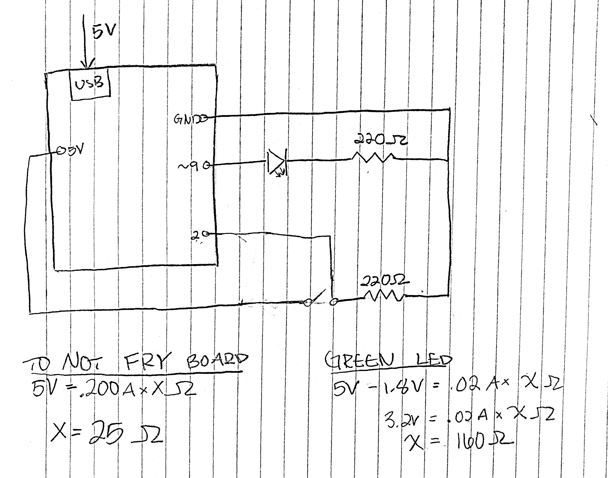
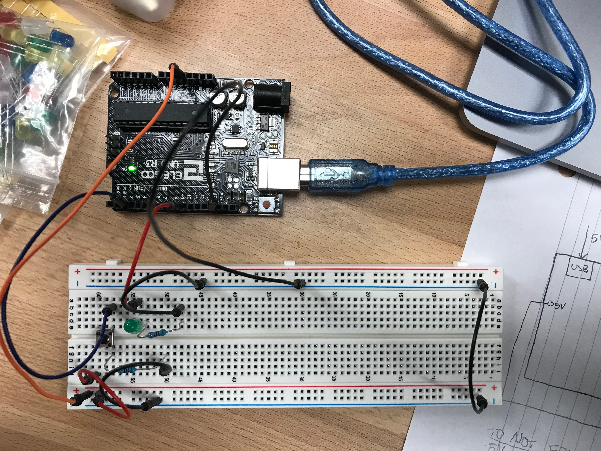
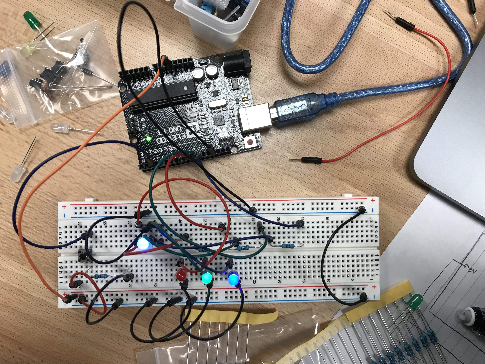

Ben's Assignment 2: Fade!
Schematic with Calculations

I used the 5V pin and the 2 pin to sense if the button was pressed. The 2 pin acts as a testing node for if current is flowing through the button. I used 220 ohms of resistence for the button in order to limit the current flowing into the ground. Based on my calculation, I needed at least 25 ohms to prevent damaging my Arduino.
For the LED, I connected it to the 9 pin that allows for analog control. I connected 220 ohms of resistence to the LED circuit to not damage the LED, as my calculation indicates that I needed 160 ohms of resistence to prevent this from happening.
Circuit

Here is a picture of my circuit. I am using the 5V from the usb port from my laptop, and it should exactly align with my schematic.
Code Snippet
int ledPin = 9; // LED connected to digital pin 9
const int buttonPin = 2; //pin for the button
int buttonState = 0; //when button state is 0, the button is not pressed
int boardLED = 13; //LED on the arduino
void setup()
{
pinMode(ledPin, OUTPUT); // sets the pin as output
pinMode(boardLED, OUTPUT); //sets the 13 pin as output
pinMode(buttonPin, INPUT); //sets pin 2 as input for the button
}
void loop()
{
buttonState = digitalRead(buttonPin); // gives the button state a variame
int i = 0; // initializes i
if (buttonState == HIGH) { // if button is press then do the following
digitalWrite(boardLED, HIGH); // turns on the board LED
while( i < 256) { // until i is equal to 256, do the following
analogWrite(ledPin, i); // turn the green led to the value of i
delay(10); // delay 10 milliseconds
i++; // increment i
}
i=0; // reset i
analogWrite(ledPin, i); // turn off LED
} else {
digitalWrite(boardLED, LOW); // if button is not pressed, turn off the Arduino LED
}
}
Here it is in Action!

When you press the button, it turns on the LED on the Arduino, and it triggers the LED to slowly become all the way bright, and then turn off.
Extra Fun!
I had some extra time to play with this assignment, and I thought it would be cool to have the 3 color LED slowly go through all the colors it can be. I also included red, green, and blue LEDs to display how much of each color is represented in the multi-color LED.
Here's the code!
int R = 9; // LED connected to digital pin 9
int G = 10;
int B = 11;
const int buttonPin = 2; //pin for the button
int buttonState = 0;
int boardLED = 13;
int RValue = 255;
int GValue = 0;
int BValue = 0;
void setup()
{
pinMode(R, OUTPUT); // sets the pin as output
pinMode(G, OUTPUT);
pinMode(B, OUTPUT);
pinMode(boardLED, OUTPUT);
pinMode(buttonPin, INPUT);
}
void loop()
{
while(digitalRead(buttonPin) == HIGH) { //when button is pressed, do the following
delay(10);
if (RValue == 255 && GValue != 255 && BValue == 0) { //turn on red and slowly turn on green
analogWrite(R, RValue);
GValue++;
analogWrite(G, GValue);
} else if (RValue > 0 && GValue == 255) { //when green is all the way lit, slowly fade out red
analogWrite(G, GValue);
RValue--;
analogWrite(R, RValue);
} else if (GValue == 255 && BValue != 255 && RValue == 0) { //when red is off, slowly fade in blue
analogWrite(G,GValue);
BValue++;
analogWrite(B,BValue);
} else if (BValue == 255 && GValue > 0) { //when blue is all the way on, slowly fade out green
analogWrite(B,BValue);
GValue--;
analogWrite(G,GValue);
} else if (BValue == 255 && RValue != 255 && GValue == 0) { //when green is off, slowly fade in red
analogWrite(B,BValue);
RValue++;
analogWrite(R,RValue);
} else if (RValue == 255 && BValue > 0) { // when red is all the way lit, slowly fade out blue
analogWrite(R,RValue);
BValue--;
analogWrite(B,BValue);
} //and repeat!
}
}
The Circuit
Here it is in action: